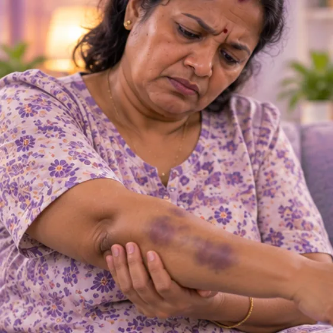

皮下出血
皮肤下的细小血管渗出血液，形成瘀青或紫红色小点
这是什么
皮肤下的小血管渗血，皮肤上就会出现青色、紫色或红色的斑块或小点。碰撞后出现瘀青很常见，但没有明显原因的瘀青需要检查。
- 皮肤任何部位
- 年纪大、某些药物
- 青紫色或红色斑块
- 就诊科室
- 家庭医生；反复出现时看血液科医生
- 多发人群
- 任何人；老年人和服用抗凝血药的人更常见
- 传染性
- 有些原因会传染，例如登革热（通过蚊子叮咬传播）
- 病程
- 碰撞造成的瘀青通常在几周内消退；其他原因则各不相同
常见表现

容易瘀青易出现瘀斑
其他症状
- 像针尖一样的红色或紫色小点
- 碰撞后皮下出现质地较硬、有触痛的肿块
- 颜色在几天内会变化：先是青紫色，然后变成绿色或黄色
- 用手按压时颜色不会变淡的斑点
为什么会这样

受伤或跌倒外伤 
年龄增长衰老
其他原因
- 抗凝血药物和某些其他药物；可咨询医生或药剂师
- 感染，例如登革热
- 血液或肝脏疾病，或缺乏维生素C或K
出现这些情况请先看医生
- 紫色或暗红色斑点按压后不褪色，并伴有发烧、颈部僵硬或感觉非常不适：拨打999
- 出血不止，或呕吐物、大便、小便中带血：立即去医院
- 发烧并伴有红色小点、剧烈腹痛、呕吐或牙龈出血：今天就去医院
- 又大又硬、非常疼痛的肿块，或头部撞击后出现嗜睡、呕吐或意识混乱：立即去医院
- 没有明显原因就容易瘀青，或瘀青伴有疲倦、脸色苍白或体重减轻：请尽快看医生
- 你正在服用抗凝血药物，瘀青比以前多：告诉医生，不要自行停药
如果有以上情况，请先看医生，再来做调理。
本页只是一般性的健康资讯。请继续按时服用平常的药物，并继续看医生。
请继续日常治疗
请继续按医嘱服药，并按时复诊。我们的调理是温和的辅助，不能代替医疗。
日常护理

咨询药剂师药剂师建议 
让家里更安全防跌倒预防跌倒
更多自我照顾的方法
- 新的瘀青：让该处休息，用布包着的冷敷袋短时间敷一敷
- 如果肢体肿胀，把它垫高
- 不要揉、挤或切开瘀青或肿块
告诉理疗师
- 服用抗凝药
- 皮肤破损、发红或疼痛
- 发烧或正在感染
- 肾脏或肝脏疾病
调理师会在开始前和你确认这一项。
常见问题
皮下出血是什么？
皮肤下的细小血管渗出血液，形成瘀青或紫红色小点。皮肤下的小血管渗血，皮肤上就会出现青色、紫色或红色的斑块或小点。碰撞后出现瘀青很常见，但没有明显原因的瘀青需要检查。
皮下出血有哪些常见表现？
容易瘀青
为什么会有皮下出血？
受伤或跌倒；年龄增长
有皮下出血要怎么照顾自己？
咨询药剂师；让家里更安全防跌倒
AI Body Master 的调理对皮下出血有帮助吗？
调理是温和的无针经络养生辅助，不能治疗或治愈皮下出血，也不能代替药物或医生。开始前请告诉理疗师。
相关疾病
参考资料: General information based on public health sources such as Mayo Clinic, NHS, Cleveland Clinic and NCBI StatPearls.
页面更新: 2026-11-01